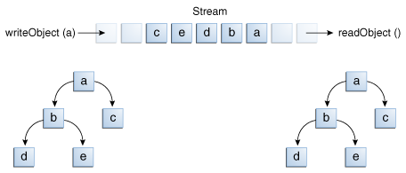

Así como los flujos de datos soportan E / S de tipos de datos primitivos, los flujos de objetos admiten E / S
de objetos. La mayoría, pero no todas las clases estándar soportan la serialización de sus objetos. Aquellos que
implementan la interfaz de marcadores
Serializable.
Las clases de flujos de objetos son
ObjectInputStream y
ObjectOutputStream. Estas clases implementan
ObjectInput y
ObjectOutput, que son subinterfaces de DataInput y
DataOutput. Esto significa que todos los métodos de E/S de datos primitivos cubiertos en los
Flujos de Datos están también implementados en los flujos de objetos. Así que un
flujo de objetos puede contener una mezcla de valores primitivos y de objetos. El ejemplo
FlujosDeObjetos ilustra esto. ObjectStreams crea la misma aplicación que
DataStreams, con un par de cambios. Primero, los precios son ahora objetos
BigDecimal
, para representar mejor los valores fraccionales. Segundo, un objeto
Calendar es
escrito en el fichero de datos, indicando una fecha de factura.
Si readObject() no devuelve el tipo de objeto esperado, intentar moldearlo a su tipo correcto puede
lanzar una
ClassNotFoundException. En este ejemplo simple, eso no puede ocurrir, así que no
intentaremos capturar la excepción. En su lugar, notificamos al compilador que estamos al tanto del problema
añadidiendo una cláusula throws ClassNotFoundException al método
main.
Los métodos writeObject y readObject son simples de usar, pero contienen alguna lógica
muy sofisticada de gestión de objetos. Esto no es importante para una clase como Calendar, la cual sólo
encapsula valores primitivos. Pero muchos objetos contienen referencias a otros objetos. Si
readObject va a reconstruir un objeto de un flujo, debe ser capaz de reconstruir todos los objetos
a los que el objeto original referenciaba. Estos objetos adicionales podrían tener sus propias referencias,
etcétera. En esta situación, writeObject atraviesa toda la red de referencias de objetos y escribe
todos los objetos en esa red hacia el flujo. Así que una única invocación de writeObject puede
causar que un gran número de objetos sean grabados en el flujo.
Esto se demuestra en la siguiente figura, donde writeObject es invocado para escribir un único
objeto nombrado a. Este objeto contiene referencias a los objetos b y c, mientras que
b contiene referencias a d y e. Invocar writeobject(a) no escribe sólo
a, sino todos los objetos necesarios para reconstruir a, así que los otros cuatro objetos en esta
red son escritos también. Cuando a es leída de vuelta por readObject, los otros cuatro
objetos son leídos de vuelta también, y todas las referencias del objeto original son preservadas.

E/S de múltiples objetos referenciados
Podría preguntarse qué ocurre si dos objetos en el mismo flujo contienen referencias a un único objeto. ¿Se
referirán ambos al objeto único cuando sean leídos de vuelta? La respuesta es "sí." Un flujo puede
sólo contener una copia de un objeto, aunque puede contener cualquier número de referencias a él. Así si usted
explícitamente escribe un objeto a un flujo dos veces, usted realmente está escribiendo sólo la referencia dos
veces. Por ejemplo, si el siguiente código escribe un objeto ob dos veces a un flujo:
Object ob = new Object();
out.writeObject(ob);
out.writeObject(ob);
Cada writeObject tiene que coincidir con su readObject, así que el código que lea el
flujo de vuelta se parecerá a algo como esto:
Object ob1 = in.readObject();
Object ob2 = in.readObject();
Estos resulta en dos variables, ob1 y ob2, que son referencias al único objeto.
Sin embargo, si un objeto único es escrito a dos diferentes flujos, es efectivamente duplicado — un único programa leyendo de vuelta ambos flujos verá dos objetos distintos.